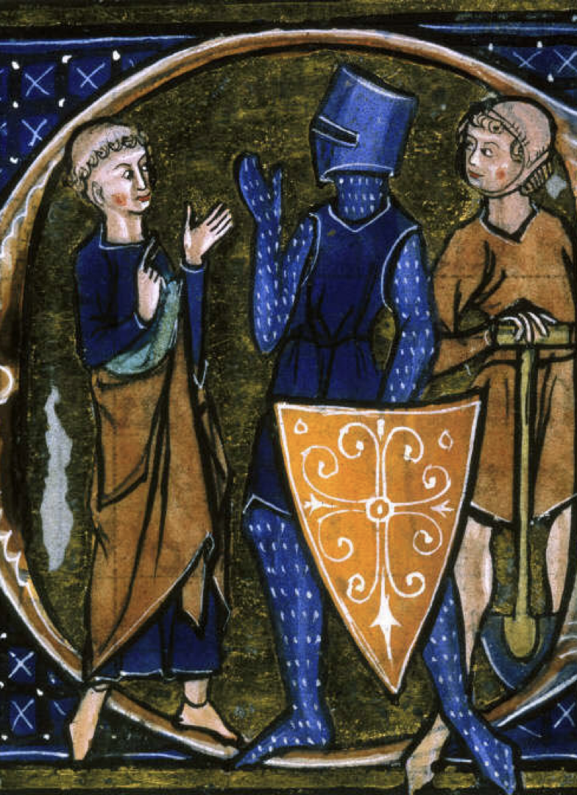
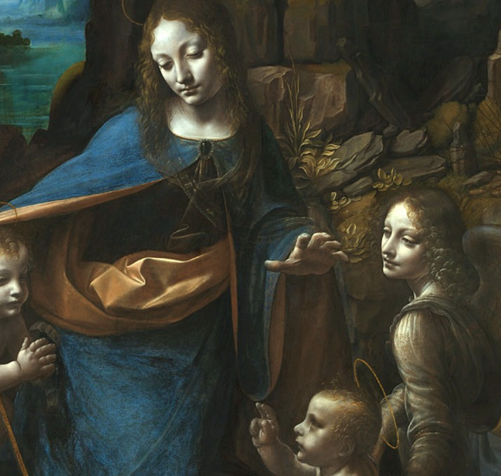
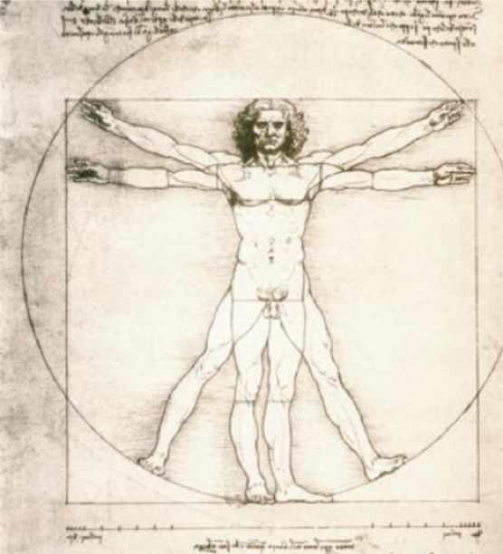
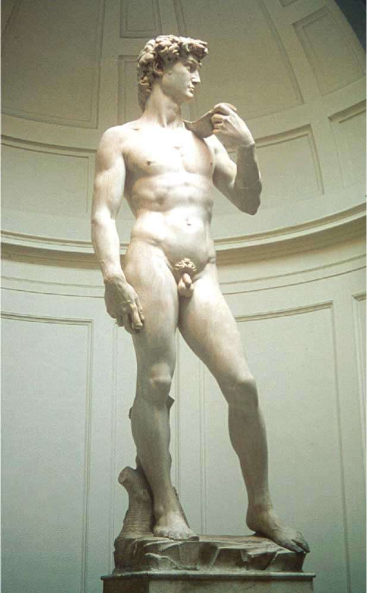
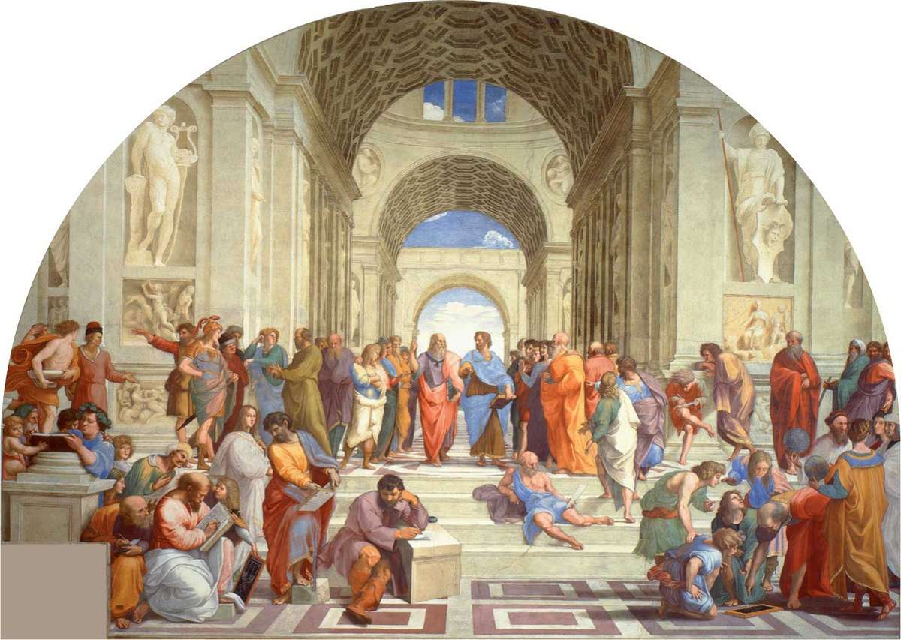
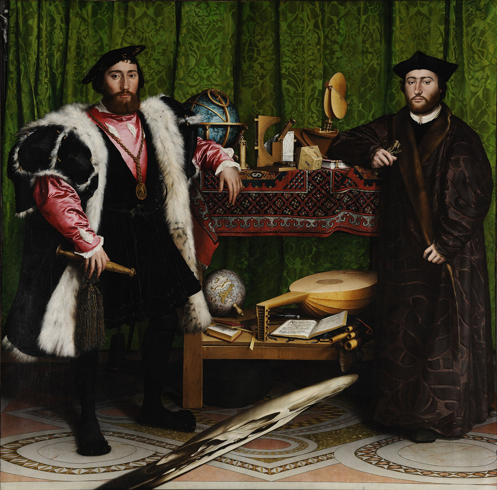
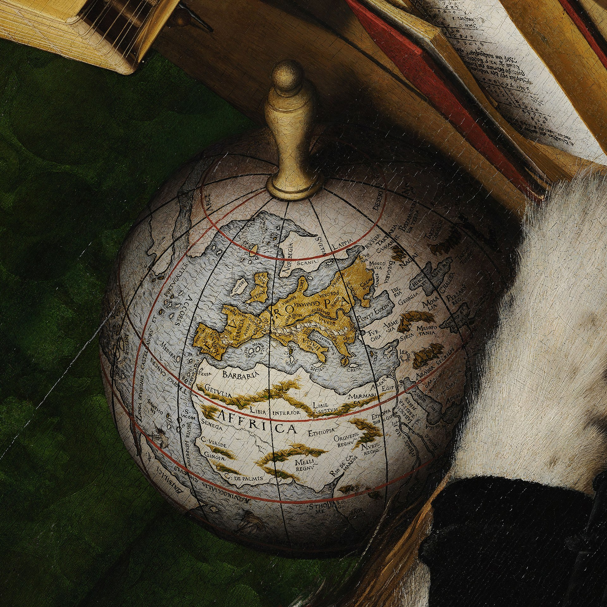
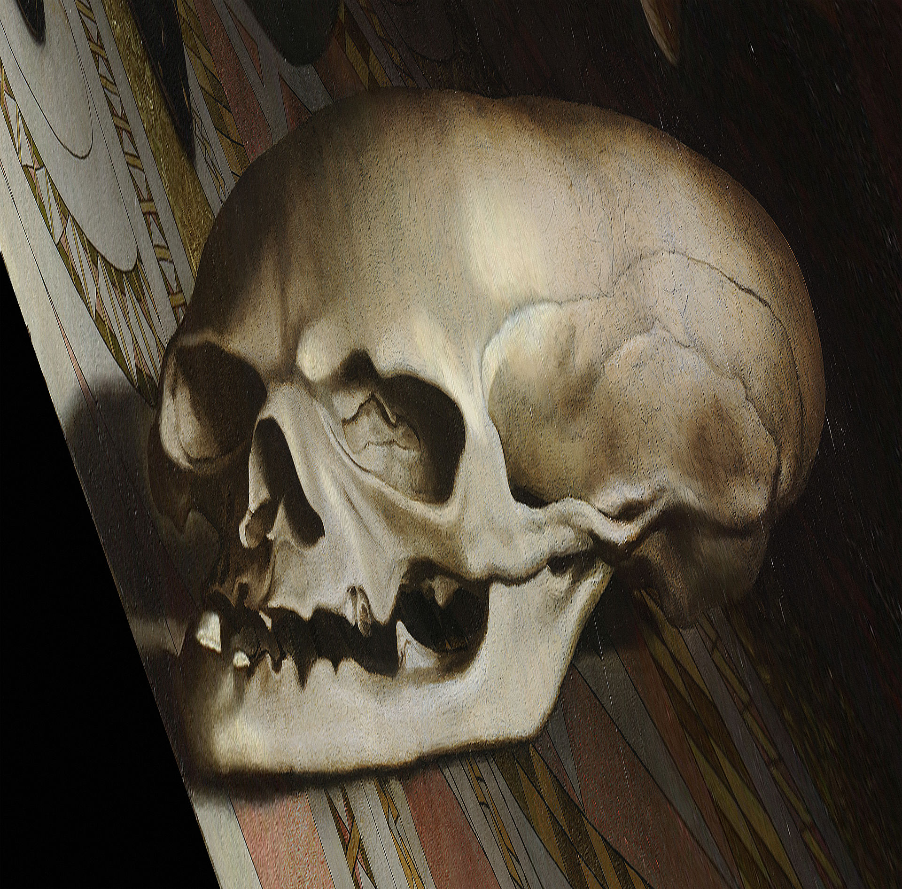
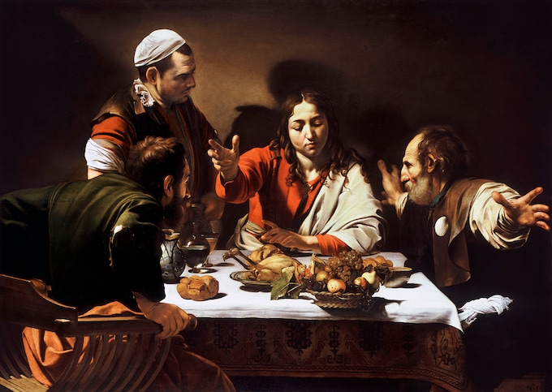

Renessansen 1
Veke 3
19 januar, 2022
Informasjon
- Epost: hsherling@gmail.com. Alle tidsfristar og påminningar kjem frå denne eposten.
- Nettside: hsherl.github.io/norsk. Alle lysbilete finn du på denne nettsida.
- Bok: Intertekst VG2. All informasjonen du treng finst her. Du må ta den med deg kvar gong.
Plan
Ferie: veke 7 (vinterferie), 14, og 15 (påskeferie).
Tema
- Renessansen
- Barokken
- Opplysningstida
- Romantikken
- Språkhistorie
Krav
- 2 framvisningar
- 2 skriftlege innleveringar
- 1 nynorsk innlevering
Quiz om norrøn tid
Del 1
- Hvilket tidsrom regner vi som middelalderen?
- 0–1349
- 800–1050
- 500–1500
- Hva er en ætt?
- En familie eller slekt som var knyttet til et lite lokalsamfunn
- En familie eller slekt som var knyttet til en gård
- En landsby
- Hvilke tre hovedsjangre deles den norrøne litteraturen inn i?
- Noveller, romaner og eventyr
- Referater av viktige hendelser, aviser og annen sakprosa
- Eddakvad, skaldekvad og sagaer
Del 2
- Hvordan ble de norrøne sagaene overlevert i begynnelsen?
- Muntlig
- Skriftlig
- Ved hjelp av runer på byggverk og planker
- Hva betyr litotes?
- Overdrivelse
- Underdrivelse
- Kontrast mellom lite og stort
- Hva er typisk for miljøskildringene i en saga?
- Miljøet skildres ikke.
- Sagaene er fulle av saftige skildringer.
- Miljøet skildres som hardt og vanskelig.
Del 3
- Hva er blodhevn?
- Man kjempet til siste mann var død.
- Den eldste var ansvarlig for å hevne de yngre.
- Familien var ansvarlig for å hevne andre familiemedlemmer.
- Hva er Den eldre Edda?
- En bok med gudedikt og heltedikt
- Kvinnen som forteller om hvordan verden ble til
- Snorres gamle oldemor, som fortalte historier som han skrev ned
- Hva er kvad?
- Et dikt man finner i en saga.
- En sang som tilhørte en ætt.
- Dikt som ble framført på tinget hver vår.
Del 4
- Hvem er det som gir råd og regler for hvordan mennesker bør leve i «Håvamål»?
- Balder
- Frigg
- Odin
- Hva er det guden Tor har mistet i «Trymskvida»?
- Kona si
- Hammeren sin
- Forstanden
- Hvilket av disse er et vanlig virkemiddel i kvadene?
- Enderim
- Bokstavrim
- Besjeling
Quiz om norrøn tid: svar
Del 1
- Hvilket tidsrom regner vi som middelalderen?
- 500–1500
- Hva er en ætt?
- En familie eller slekt som var knyttet til en gård
- Hvilke tre hovedsjangre deles den norrøne litteraturen inn i?
- Eddakvad, skaldekvad og sagaer
Del 2
- Hvordan ble de norrøne sagaene overlevert i begynnelsen?
- Muntlig
- Hva betyr litotes?
- Underdrivelse
- Hva er typisk for miljøskildringene i en saga?
- Miljøet skildres ikke.
Del 3
- Hva er blodhevn?
- Familien var ansvarlig for å hevne andre familiemedlemmer.
- Hva er Den eldre Edda?
- En bok med gudedikt og heltedikt
- Hva er kvad?
- Et dikt man finner i en saga
Del 4
- Hvem er det som gir råd og regler for hvordan mennesker bør leve i «Håvamål»?
- Odin
- Hva er det guden Tor har mistet i «Trymskvida»?
- Hammeren sin
- Hvilket av disse er et vanlig virkemiddel i kvadene?
- Bokstavrim
Del 5
- Hvorfor kalles «Håvamål» for «visdomsdiktet»?
- Fordi det består av visdomsord og gode råd for hvordan man bør oppføre seg
- Hva menes med refererende synsvinkel?
- At fortelleren står utenfor handlingen og er objektiv
Renessansen (1): læremål
- snakke om synet på mennesket i renessansen og i vår tid
- forklare kva som ligg i omgrepet renessanse, og korleis denne kulturhistoriske epoken skil seg frå mellomalderen
- gjere greie for nokre trekk ved samfunnet og skriftkulturen i renessansen
- lese og tolke essay, romanutdrag og utdrag frå skodespel frå renessansen og sette desse inn i ein kulturhistorisk samanheng
- drøfte korleis form og tematikk i essay frå renessansen er relevant også i dag
- drøfte korleis tematikken i nokre utdrag frå romanar og skodespel frå renessansen har betydning for oss i dag
Renessansen (1): i dyreparken
Helt stille nå. Puste med nesen, underlivet banker, hendene er fulle av blod, det svir i hofta, ryggen og kjeven. Alt strammes. Hele meg strammes. Alle musklene er harde. Han skyver kassa litt bort med beinet og da setter jeg tennene i ham og låser kjeften i leggen hans. Jeg kommer gjennom stoffet, kjenner huden hans, den sprekker, inn i kjøttet. Faen, skriker han. Faen, hva er det der?! (Fjeldbraaten Jerv, 2020)
Sitatet over er frå romanen Jerv av Ida Fjeldbraaten (2020). I romanen byter ei jente og ein jerv på å fortelje ei historie frå den same dyreparken.
Oppgåve: Trur du forteljaren i akkurat dette sitatet er mennesket eller dyret? Er du sikker? Kva for bevis finn du i så fall i teksten? Dokker har 5 minutt til å diskutere med naboen.
Renessansen (2): kjenneteikn
- «Renessanse» betyr «atterføding»
- Renessansen byrja i Nord-Italia (spesielt Firenze) på 1300-tallet og varte til 1600-tallet, omtrent 1350-1600
- «Ad fontes»: tilbake til kjeldene
- Mennesket i sentrum: humanisme
- Nye artistiske metodar: sentralperspektiv
- Vitskap tar over
- Kyrkja taper makt på grunn av boktrykkarkunsten og reformasjonen
- Mennesket tar kontroll over naturen
- Dyrking av «universalgeniet» som førebilete
Religion, politikk og samfunn
- Humanisme
- Sekularisme
- Heliosentrisk verdsbilete
Vitskap
- Leonardo da Vinci (1452-1519)
- Nicolaus Kopernikus (1473-1543)
- Johannes Kepler (1571-1630)
- Giordano Bruno (1548-1600)
- Galileo Galilei (1564-1642)
Renessansen (3): kunst og arkitektur
Arkitektur

Kunst i National Gallery
- Leonardo da Vinci (1452-1519)
- Michelangelo (1475-1564)
- Rafael (1483-1520)
- Hans Holbein den yngre (1497/8-1543)
- Caravaggio (1571–1610)
- Rembrandt (1606-1669)
Kunst: 2D

Kunst: 3D

Kunst: Leonardo da Vinci (1452-1519)

Kunst: Michelangelo (1475-1564)

Kunst: Raphael (1483-1520)

Kunst: Hans Holbein den yngre (1497/8-1543)

Kunst: Hans Holbein den yngre (1497/8-1543)

Kunst: Hans Holbein den yngre (1497/8-1543)

Kunst: Caravaggio (1571-1610)

Test deg sjølv
- Kva betyr omgrepa renessanse og humanisme?
- Tenk på bileta dokker har sett. Kva kjenneteikner bileter frå renessansen?
- Undersøk kva som kjenneteiknar tidsperioden antikken, som mange kunstnarar i renessansen henta inspirasjon frå.
Renessansen (3): Hamlet
- Shakespeare (1564-1616)
- Kjent for tragedier
Hamlet (1): tolking
What a piece of work is a man! How noble in reason, how infinite in faculty! In form and moving how express and admirable! In action how like an angel, in apprehension how like a god! The beauty of the world. The paragon of animals. And yet, to me, what is this quintessence of dust? Man delights not me. No, nor woman neither, though by your smiling you seem to say so. (Hamlet, Act 2 Scene 2)
Oppgåve: Kva meiner Hamlet? Kva slags kjenneteikn
Hamlet (2): stil
1 - Grant 2 - Branagh 3 - Tennant
Oppgåve: Kven sitt skodespel er best? Korfor?
Hamlet (2): omsetjing
Oppgåve: omset til norsk!
What a piece of work is a man! How noble in reason, how infinite in faculty! In form and moving how express and admirable! In action how like an angel, in apprehension how like a god! The beauty of the world. The paragon of animals. And yet, to me, what is this quintessence of dust? Man delights not me. No, nor woman neither, though by your smiling you seem to say so. (Hamlet, Act 2 Scene 2)
Hamlet (3): eksempel på omsetjing
What a piece of work is a man! How noble in reason, how infinite in faculty! In form and moving how express and admirable! In action how like an angel, in apprehension how like a god! The beauty of the world. The paragon of animals. And yet, to me, what is this quintessence of dust? Man delights not me. No, nor woman neither, though by your smiling you seem to say so. (Hamlet, Act 2 Scene 2)
Intertekst:
For et mesterverk mennesket er! Så opphøyet i sin fornuft! Så ubegrenset i sine evner! Så uttrykksfullt og beundringsverdig i skikkelse og bevegelse! Så lik en engel i sin handling! Så lik en gud i tankekraft! Verdens pryd! Alle skapningers forbilde! (Hamlet, Act 2 Scene 2; Intertekst VG2)
Moment sin omsetning:
Og mennesket, kva er det for eit meisterverk – kor edelt det er i sine tankar; kor endelaust i evner, i form og ferd; kor uttrykkeleg og imponerande i handling; så engleaktig i sine innsikter; kor gudelikt; ein pryd for verda; det mest fullkomne blant alle dyr. (Hamlet, Act 2 Scene 2; Moment VG2)
Oppgåve: Er det noko i denne omsetjinga som dokker ikkje er einige med?
Renessansen (4): litteratur
- Dante Alighieri (1265–1321), Den guddommelige komedie (Divina Commedia)
- Giovanni Boccaccio (1313–1375), Decameronen
- Miguel de Cervantes (1547–1616), Don Quijote
- Michel de Montaigne (1533–1592), Essays
Lekse til neste gong
Lese side 166-180 i Intertekst.